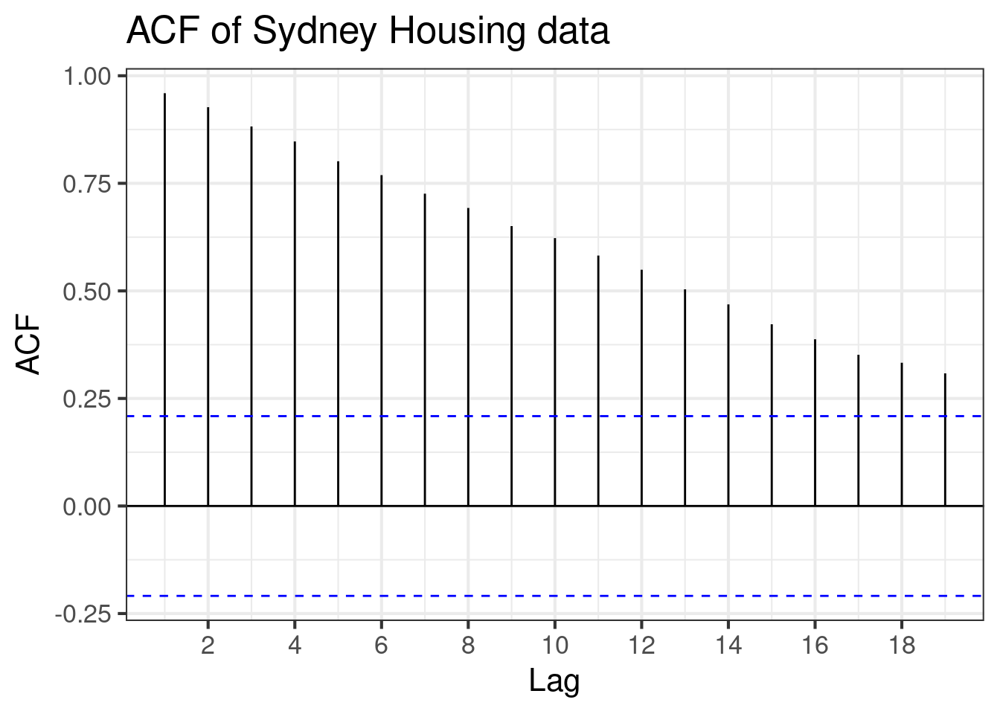
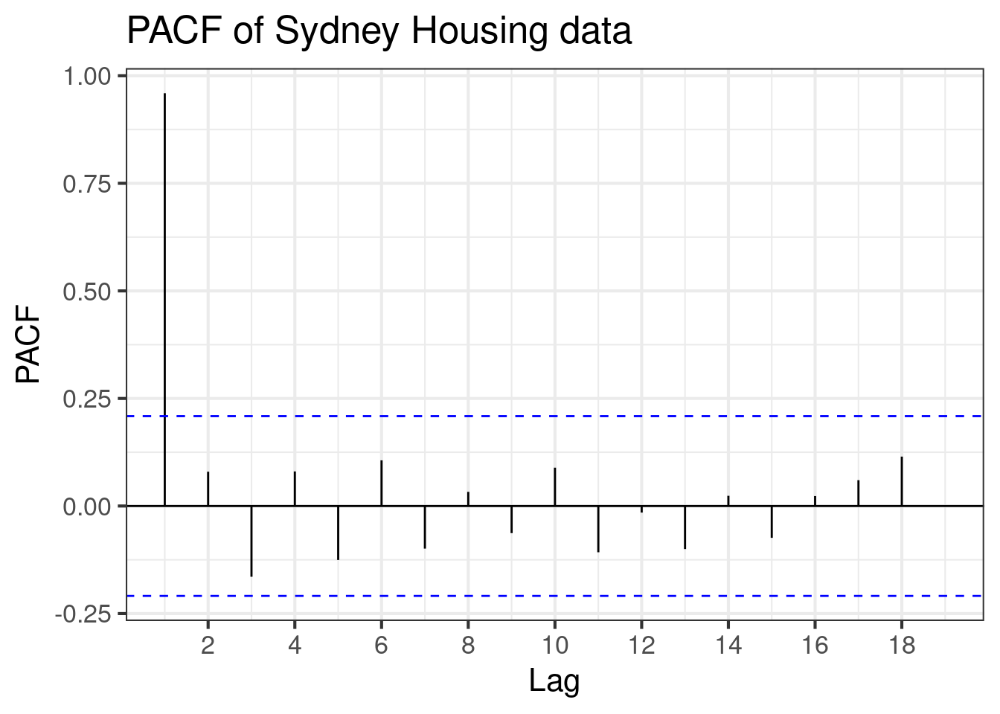
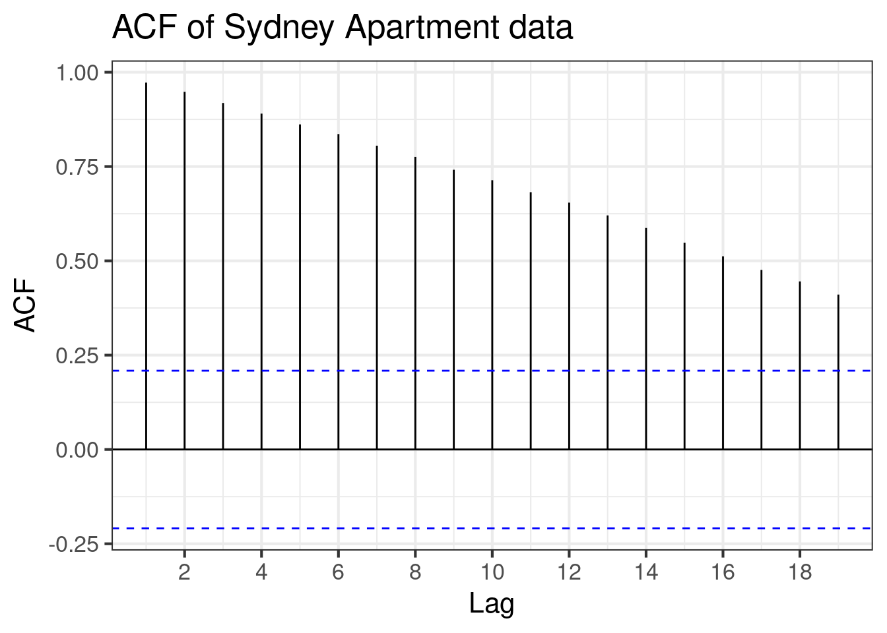
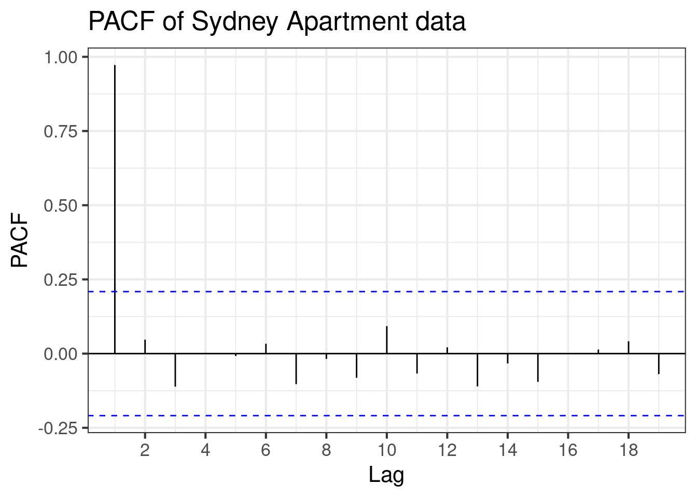
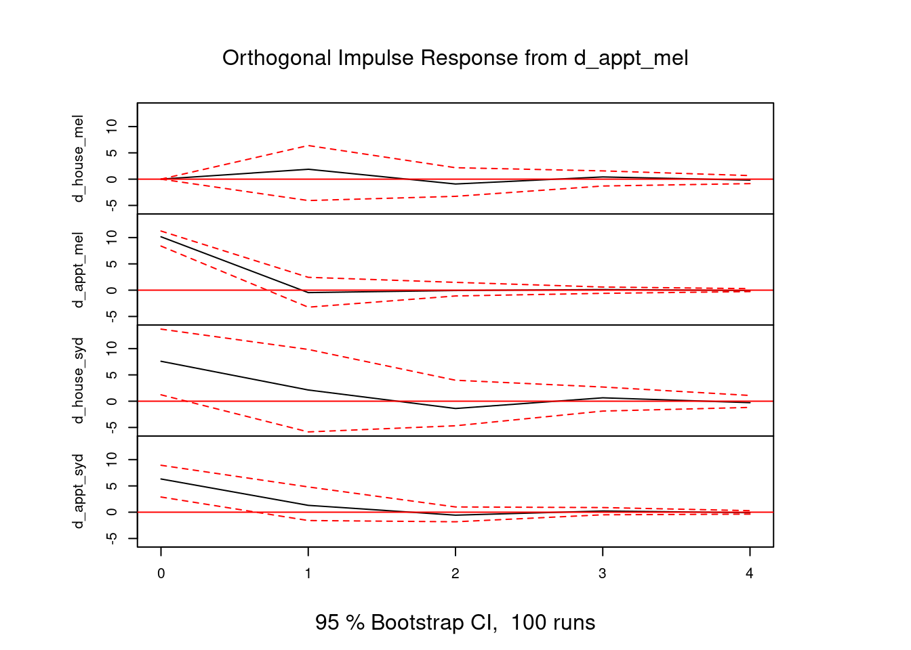

Assignment 2
Housing Data: Time Series Properties
Stationarity:
Determine whether series are stationary (use visualisation and hypothesis tests)
Code
housingdata |>
ggplot(aes(x=date,y=house_mel)) +
labs(x="Date", y="Price", title='Melbourne Median House Prices Over Time') +
geom_line()
housingdata |>
ggplot(aes(x=date,y=appt_mel)) +
labs(x="Date", y="Price", title='Melbourne Median Apartment Prices Over Time') +
geom_line()
housingdata |>
ggplot(aes(x=date,y=house_syd)) +
labs(x="Date", y="Price", title='Sydney Median House Prices Over Time') +
geom_line()
housingdata |>
ggplot(aes(x=date,y=appt_syd)) +
labs(x="Date", y="Price", title='Sydney Median Apartment Prices Over Time') +
geom_line()


Visually, all series look non-stationary as their means are clearly time dependent and all series exhibit an upwards trend. Doesn’t seem to be any seasonality.
Formal Hypothesis tests
Melbourne Housing Prices
Code
ACF(housingdata, house_mel) |>
autoplot() +
labs(x="Lag", y="ACF", title="ACF of Melbourne Housing data")
PACF(housingdata, house_mel) |>
autoplot() +
labs(x="Lag", y="PACF", title="PACF of Melbourne Housing data")
# ADF test (hm_ stands for homes melbourne)
hm_adf_result <- ur.df(housingdata$house_mel, type = "drift", selectlags = "AIC")
hm_adf_result_sum <- summary(hm_adf_result)
hm_adf_teststat <- round(hm_adf_result_sum@teststat[1], 2)
hm_adf_cval <- round(hm_adf_result_sum@cval[1,2], 2)
#KPSS test
hm_kpss_result <- kpss.test(na.omit(housingdata$house_mel))
hm_kpss_pval <- round(hm_kpss_result$p.value, 2)

For the ADF test: The \(\tau\) statistic was given as \(-0.6\), which is greater than the critical value of \(-2.89\) at the \(5\%\) significance level. Thus, we fail to reject \(H_0\) and conclude that the series may have a unit root and differencing is necessary.
For the KPSS test: the \(p\)-value was given as \(0.01\), so we reject the null in favour of the series being non stationary, which supports the conclusion from the ADF test.
From the PACF, the strong spike at lag \(1\) suggests the presence of persistence in the series, which is consistent with non-stationary behaviour. Combined with formal unit root tests, this indicates that the series likely becomes stationary after first order differencing. Therefore, the Melbourne housing series is likely \(I(1)\).
Melbourne Apartment Prices
Code
ACF(housingdata, appt_mel) |>
autoplot() +
labs(x="Lag", y="ACF", title="ACF of Melbourne Apartment data")
PACF(housingdata, appt_mel) |>
autoplot() +
labs(x="Lag", y="PACF", title="PACF of Melbourne Apartment data")
# ADF test (am_ stands for apartments melbourne)
am_adf_result <- ur.df(housingdata$appt_mel, type = "drift", selectlags = "AIC")
am_adf_result_sum <- summary(am_adf_result)
am_adf_teststat <- round(am_adf_result_sum@teststat[1], 2)
am_adf_cval <- round(am_adf_result_sum@cval[1,2], 2)
#KPSS test
am_kpss_result <- kpss.test(na.omit(housingdata$appt_mel))
am_kpss_pval <- round(am_kpss_result$p.value, 2)

For the ADF test: The \(\tau\) statistic was given as \(-1.35\), which is greater than the critical value of \(-2.89\) at the \(5\%\) significance level. Thus, we fail to reject \(H_0\) and conclude that the series may have a unit root and differencing is necessary.
For the KPSS test: the \(p\)-value was given as \(0.01\), so we reject the null in favour of the series being non stationary, which supports the conclusion from the ADF test.
From the PACF, the strong spike at lag \(1\) suggests the presence of persistence in the series, which is consistent with non-stationary behaviour. Combined with formal unit root tests, this indicates that the series likely becomes stationary after first differencing. Therefore, the Melbourne apartment series is likely \(I(1)\).
Sydney Housing Prices
Code
ACF(housingdata, house_syd) |>
autoplot() +
labs(x="Lag", y="ACF", title="ACF of Sydney Housing data")
PACF(housingdata, house_syd) |>
autoplot() +
labs(x="Lag", y="PACF", title="PACF of Sydney Housing data")
# ADF test (hs_ stands for houses sydney)
hs_adf_result <- ur.df(housingdata$house_syd, type = "drift", selectlags = "AIC")
hs_adf_result_sum <- summary(hs_adf_result)
hs_adf_teststat <- round(hs_adf_result_sum@teststat[1], 2)
hs_adf_cval <- round(hs_adf_result_sum@cval[1,2], 2)
#KPSS test
hs_kpss_result <- kpss.test(na.omit(housingdata$house_syd))
hs_kpss_pval <- round(hs_kpss_result$p.value, 2)

For the ADF test: The \(\tau\) statistic was given as \(1.07\), which is greater than the critical value of \(-2.89\) at the \(5\%\) significance level. Thus, we fail to reject \(H_0\) and conclude that the series may have a unit root and differencing is necessary.
For the KPSS test: the \(p\)-value was given as \(0.01\), so we reject the null in favour of the series being non stationary, which supports the conclusion from the ADF test.
From the PACF, the strong spike at lag \(1\) suggests the presence of persistence in the series, which is consistent with non-stationary behaviour. Combined with formal unit root tests, this indicates that the series likely becomes stationary after first differencing. Therefore, the Sydney housing series is likely \(I(1)\).
Sydney Apartment Prices
Code
ACF(housingdata, appt_syd) |>
autoplot() +
labs(x="Lag", y="ACF", title="ACF of Sydney Apartment data")
PACF(housingdata, appt_syd) |>
autoplot() +
labs(x="Lag", y="PACF", title="PACF of Sydney Apartment data")
# ADF test (as_ stands for apartments sydney)
as_adf_result <- ur.df(housingdata$appt_syd, type = "drift", selectlags = "AIC")
as_adf_result_sum <- summary(as_adf_result)
as_adf_teststat <- round(as_adf_result_sum@teststat[1], 2)
as_adf_cval <- round(as_adf_result_sum@cval[1,2], 2)
#KPSS test
as_kpss_result <- kpss.test(na.omit(housingdata$appt_syd))
as_kpss_pval <- round(as_kpss_result$p.value, 2)

For the ADF test: The \(\tau\) statistic was given as \(-0.2\), which is greater than the critical value of \(-2.89\) at the \(5\%\) significance level. Thus, we fail to reject \(H_0\) and conclude that the series may have a unit root and differencing is necessary.
For the KPSS test: the \(p\)-value was given as \(0.01\), so we reject the null in favour of the series being non stationary, which supports the conclusion from the ADF test.
From the PACF, the strong spike at lag \(1\) suggests the presence of persistence in the series, which is consistent with non-stationary behaviour. Combined with formal unit root tests, this indicates that the series likely becomes stationary after first differencing. Therefore, the Sydney apartment series is likely \(I(1)\).
Conclusion on Stationarity:
All series are determined to be non-stationary and have unit roots. All are integrated of order \(1\)-\(I(1)\); meaning that taking the first difference of each series should make each series stationary.
Cointegration
Pairs: - Houseprices in Melbourne and Sydney
- Apartment prices in Melbourne and Sydney
- Apartment prices in Melbourne and house prices in Melbourne
- House prices in Sydney and house prices in Sydney
Test for cointegration of each pair
Use Engle-Granger procedure as dealing with pairs
1. Run long run regression \(y_t = a + \beta x_t + u_t\)
2. Save \(u_t\)
3. Test the residuals for stationarity (ADF test on ut)
\(H_0\): resids have a unit root (no cointegration)
\(H_1\): resids are stationary (cointegration)
Houseprices in Melbourne and Sydney
\(p\)-value was given as \(0.93\) meaning there is insufficient evidence to reject \(H_0\), indicating that the residuals may be non stationary. Thus, there is no evidence of cointegration between house prices in melbourne and sydney
Apartment prices in Melbourne and Sydney
\(p\)-value was given as \(0.46\) meaning there is insufficient evidence to reject \(H_0\), indicating that the residuals may be non stationary. Thus, there is no evidence of cointegration between apartment prices in melbourne and sydney
Apartment prices in Melbourne and house prices in Melbourne
\(p\)-value was given as \(0.44\) meaning there is insufficient evidence to reject \(H_0\), indicating that the residuals may be non stationary. Thus, there is no evidence of cointegration between apartment prices and house prices in melbourne
Apartment prices in Sydney and house prices in Sydney
\(p\)-value was given as \(0.92\) meaning there is insufficient evidence to reject \(H_0\), indicating that the residuals may be non stationary. Thus, there is no evidence of cointegration between apartment prices and house prices in Sydney
Conclusion for pair wise cointegrations
No cointegration between the given pairs, meaning the two price series only move together in the short run and don’t move around a common long run equilibrium.
Does one (or more) cointegrating relationship exist among all four variables
Johansen Test
Following the PACF’s, we will want one lag in differences so for the Johansen test we use K = 2
Code
housing_jo_summ <- housingdata |>
tibble() |>
select(house_mel, appt_mel, house_syd, appt_syd) |>
ca.jo(
ecdet = "const",
type="eigen",
K = 2,
spec="longrun",
season=4) |>
summary()
# Transform Johansen test results into readable table
housing_jo_summ |> pluck("cval") |>
cbind(
housing_jo_summ |> pluck("teststat")
) |>
as.data.frame() |>
setNames(c("10pct", "5pct", "1pct", "test")) |>
mutate(
hypothesis = c("r <= 3", "r <= 2", "r <= 1", "r = 0"),
.before = test
) |>
select(hypothesis, test, `10pct`, `5pct`, `1pct`) |>
tibble() |>
knitr::kable(
col.names = c("Test", "Statistic", "10%", "5%", "1%"),
digits = 2,
caption = "Johansen Cointegration Test Results"
)As the test is not rejected at any level, we can say that there are no cointegrating relationships
Conclusion From Johansen Test
No cointegrating relationships were found, which matches the results from the Engle Granger tests in which the tested pairs did not have a cointegrating relationship, thus while there may be short run relationships, there are no stable long-run equilibrium relationships. An explanation could be due to city-specific or property-type factors.
Models for the Data
Model the data using one or more of - VAR model
- Error correction model
- ARDL model
- VECM model
VAR Model
We will be using a VAR model on the first differences of the series. This is due to all series being \(I(1)\) and there being no evidence of cointegration, meaning that there are no long run relationships that have to be modelled with a VECM.
This lets us: - Capture short run interdependence - Evaluate how shocks to one market affects others
\[ y_{t}=\begin{bmatrix} \Delta \texttt{house\_mel} \\ \Delta \texttt{house\_syd} \\ \Delta \texttt{appt\_mel} \\ \Delta \texttt{appt\_syd} \end{bmatrix} \]
And the model is
\[
\mathbf{y_{t}} = \mathbf{c}+\mathbf{\Phi y_{t-1}}+\mathbf{\varepsilon_{t}}
\]
Where \(\mathbf{c}\) is a \(4\times 1\) intercept vector and \(\mathbf{\Phi}\) is a \(4\times 4\) coefficient matrix.
Code
var_housingdata <- housingdata |>
mutate(
d_house_mel = c(NA, diff(house_mel)),
d_appt_mel = c(NA, diff(appt_mel)),
d_house_syd = c(NA, diff(house_syd)),
d_appt_syd = c(NA, diff(appt_syd))
) |>
drop_na()
var_housing <- var_housingdata |>
tibble() |>
dplyr::select(d_house_mel, d_appt_mel, d_house_syd, d_appt_syd) |>
VAR(p=1, type = "const")
var_housing |> irf(
# The variable receiving the shock
impulse = "d_appt_mel",
# Affected variables
response = c("d_house_syd", "d_appt_syd", "d_house_mel", "d_appt_mel"),
# Number of periods to trace the effect (e.g. 12 quarters = 3 years)
n.ahead = 4,
) |>
plot()